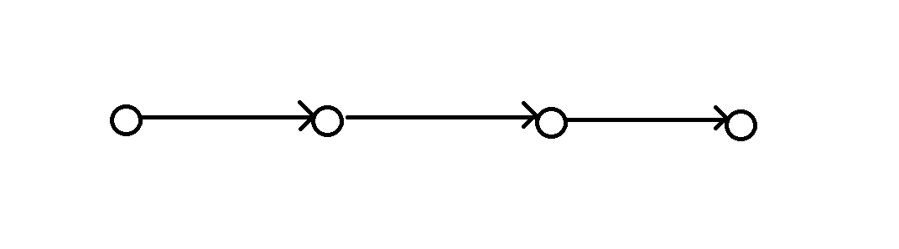
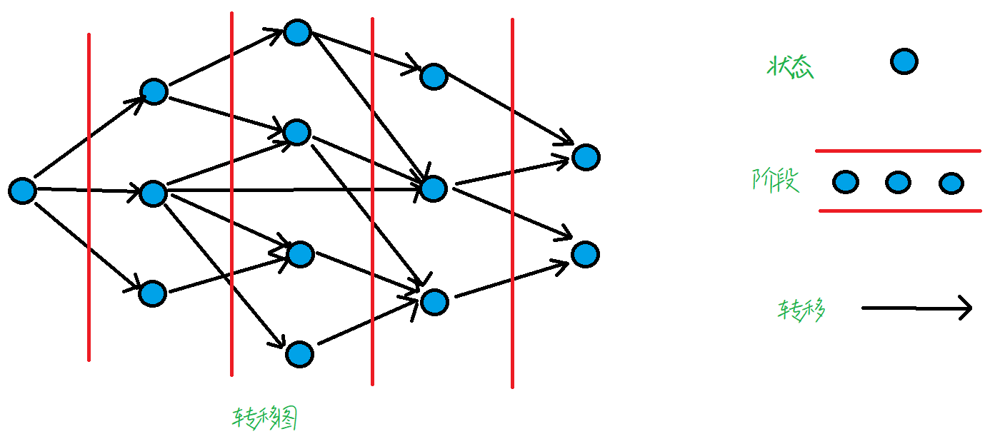
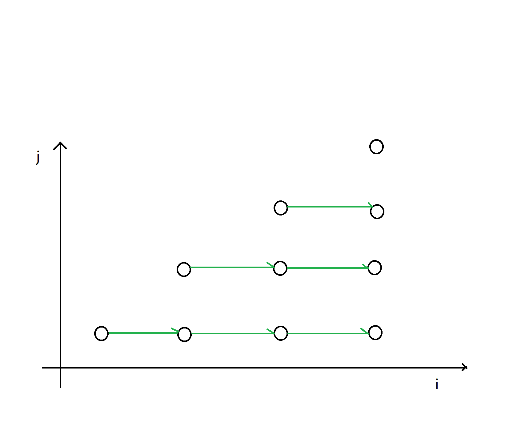
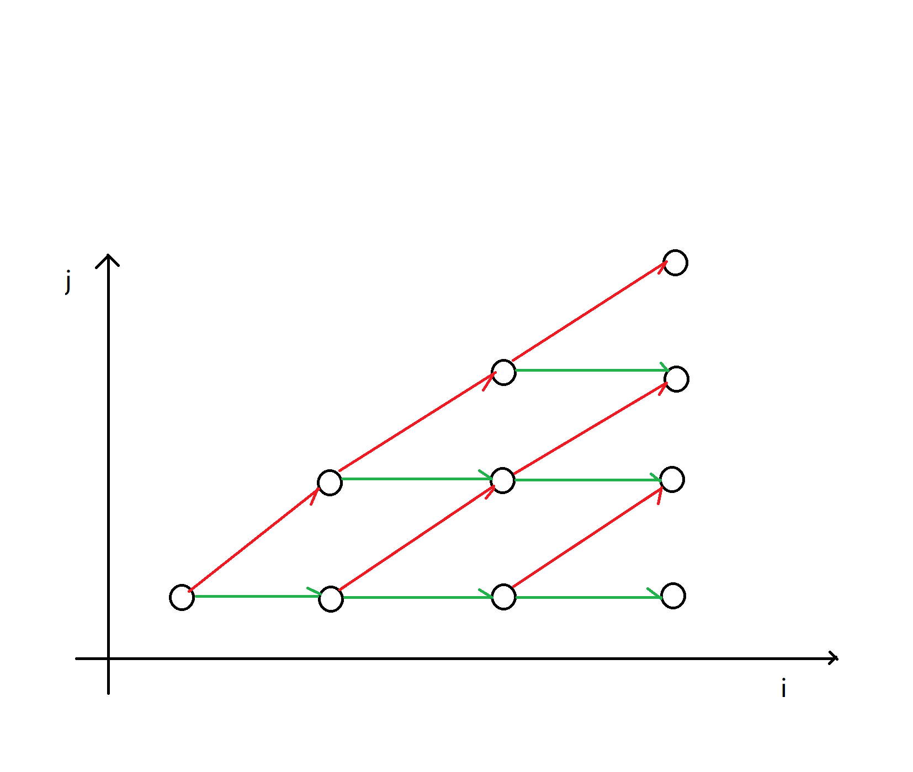

重新解构 DP
Definitionsψ(｀∇´)ψ
其实动态规划的本质是，在整个状态空间中，建立了一张 DAG（有向无环图），这保证了动态规划的 无后效性（不会成环）。其中，每一个节点对应一个 状态，同层的一系列节点称之为 阶段，它对应的就是一个 子问题。
而 最优子结构 则是，对于一个问题的最优解，它一定包含了子问题的最优解，或者说，一个问题的最优解应当由子问题的最优解导出，而 决策 则是这张图上的有向边。
贪心算法其实也是满足了最优子结构的，只是它和动态规划的转移不同，它每次只 浅显 的取了 当前局面 下的最优解，所以它的转移图应该是这样的：

动态规划则是，从先前的（多个）子问题当中，找到当前局面的最优解，它的转移图则是这样的：

换句话来说，动态规划就是，对于一些满足最优子结构性质的信息，通过分割子问题，在子问题间无后效性转移，求得最终解的算法。
具体要注意的事项，技巧会在下面的三道题里面提到。
ARC153D Sum of Sum Dightsψ(｀∇´)ψ
Statementψ(｀∇´)ψ
记 \(f(x)\) 表示 \(\text{popcount}_{10}(x)\)，如 \(f(114514) = 1 + 1 + 4 + 5 + 1 + 4 = 16\)。
给定一个序列 \(a_1, \dots a_n\)，求一个 \(x\) 使得 \(\sum f(a_i + x)\) 最小，求出这个最小的 \(\sum f(a_i + x)\) 的值。
\(1\le n \le 2\times 10^5, a_i \in [1, 10^9]\)。
Solutionψ(｀∇´)ψ
注意到这里是对数位进行考虑，不难由经典套路想到：我们大概率是要直接对整体的每一位做处理，也就是以每一位作为阶段考虑。
思考一下，这个 \(x\) 加进来之后，对 \(f()\) 的影响应该是什么：
可以注意到，如果 \(x\) 让 \(f()\) 变小了，显然是 \(a_i + x\) 产生了进位（并且两个数相加最多进 \(1\)），所以对于某一位，进位的影响应该是：\(a_i(j) + x(j) + lst\)，其中 \(lst\) 表示上一位的进位。
因为每次进位只会进 \(1\)，所以我们可以想到，状态中应该记录某一位的进位次数（有多少个 \(a_i\) 进了位）。
于是枚举上一位的 \(x(j - 1)\) 进行决策，但是这样的话，每次转移我们需要知道，哪些 \(a_i\) 在上一位进了位，这样就变成 \(O(n^2)\) 级别的复杂度了。
所以考虑怎么优化，可以注意到，如果我们确定了 \(x\) 的第 \(j - 1\) 位，那么有一些 \(a_i\) 是一定不会进位的（也就是说实际上对于一个确定的 \(x(j - 1)\)，这一位的进位情况是唯一确定的，不用枚举）
那么如果我们对着 \(a\) 按照低 \(j - 1\) 位排序，每次进位的一定是一段后缀，枚举 \(x(j - 1)\in[0,9]\)，然后就能 \(O(n)\) 确定所有 \(x(j - 1)\) 的进位情况了。
那么设 \(dp(j, k)\) 表示，考虑到低 \(j\) 位，当前有长度为 \(k\) 的一段后缀进位的方案数。
转移就很容易了，复杂度 \(O(n \times 10^2)\)，这里使用的是基数排序。
Enlightenmentψ(｀∇´)ψ
- dp 数组当中应当记录两个东西，一个是阶段，一个是状态，阶段是一定要确定清楚的，状态可以先暂时不管，慢慢根据转移的需求来确定。
- 当我们发现 dp 的状态有点多，复杂度高的时候，不妨考虑精简状态，看看哪些状态是一定不可能转移的，以此达到排除冗杂状态的目的。
- 设计 dp 阶段时一定不要拘泥于基本情况，要思考更深入的情况。
- 在本题中，就不应当思考最基本的，怎么确定这个 \(x\)，我们应当考虑的是，怎么处理 \(x\) 对于答案的影响，相当于是，其实我们并不在意这个 \(x\) 具体是多少，我们只关心怎么求出这个最优的答案，所以我们只需要知道 \(x\) 在每一位对答案的影响就行了，当然如果要求这个 \(x\) 也是可以的，直接倒推回去就行了。
Lougu7152 Bovine Genetics Gψ(｀∇´)ψ
Statementψ(｀∇´)ψ
定义一个对由 \(\texttt{A,C,G,T,?}\) 组成的基因组序列 \(a\) 的一次操作如下：
- 在所有连续相同字符之间的位置将当前基因组切开
- 反转所有得到的子串并连接。 现在给定一个操作过后的序列，求有多少种可能的初始序列，其中 \(\texttt{?} \in \{\texttt{A,C,G,T}\}\)。
基因组长度 \(n \in [1, 10^5]\)，答案对 \(10^9+7\) 取模。
Solutionψ(｀∇´)ψ
Method 1ψ(｀∇´)ψ
套路的，先不考虑 \(\texttt{?}\) 的贡献，之后再分别计入，或者看做法是不是已经天然支持处理通配符了。
我们记最初的序列为 \(S\)，操作后的序列为 \(T\)。
可以注意到，如果我们对 \(T\) 进行划分，要想能从 \(S \to T\)，必然满足：
- 每一段内不会出现连续的字符，因为我们绝对会断开。
- 对于第 \(i\) 段子串和第 \(i + 1\) 段子串，第 \(i\) 段的开头一定和第 \(i + 1\) 段的结尾相等，否则转回去之后，这个地方是不能断开的。
由此还可以发现，对于一个原序列，它对应的操作后的序列是唯一的 （但是反过来就不是了）。
这就提示我们以“分割”作为 dp 的决策要素，意思是，我们的决策指向什么状态，取决于这个位置是否断开。
而决策的选择又提示了我们，该如何选择阶段，应当考虑，将每个位置作为阶段，这样处理的状态就是，当前这个位置的所有可能情况。
于是接下来我们考察，状态应当记录什么，很显然当前位置 \(i\) 不是并入上一段，就是新开一段（这个也是这类成段转移的 dp 的套路），所以我们需要知道一些信息，确认 \(i\) 到底应该归属于哪一部分。
但是这还不够，因为，只记录 \(i\) 属于上一段，还是新开一段，并不能找到一个可行的决策，因为题目中的限制是，相邻两段的头和尾一定是相等的，所以我们的状态，还需要记录一些额外的信息：
- 首先要记录上一段（假设当前还没加入 \(i\)）的尾和上上段的头，这是因为，如果 \(i\) 就成了上一段的尾，我们需要判断是否能转移。
- 然后要记录上一段的头，因为当 \(i\) 新开一段的时候，我们需要知道新开一段这个操作是否合法。
可能有人会疑惑，万一新开的这一段后面又加了一个字符，那 \(i\) 不是就不用和上一段的头相等了吗？
问题是好的，但是要注意的是，我们这里是在做动态规划，我们只关心当前这个阶段怎么转移，我们不关心之后的情况，只要能覆盖整个状态空间就行了。
这种情况，其实也是可以覆盖的，因为我们并不关心上一段具体是哪里，我们关心的只是，怎么从之前的子问题转移过来，在考虑 \(i + 1\) 那个位置的时候，情况又和 \(i\) 没有区别了。
所以我们可以自然而然的写出 dp 数组的定义：
设 \(dp(i, fh, ft, sh)\)，表示当前考虑到第 \(i\) 个字符，上一段的头尾分别为 \(fh,ft\)，上上段的段头为 \(sh\) 的方案数。
转移其实上面考虑记录状态的时候已经提到了，略去。
最后的答案就是，\(\sum\limits_{i}\sum\limits_{j}\sum\limits_{k} dp(n, i, j, k)\)。
然后通配符怎么处理呢？其实我们只需要把当前位置分别当成 \(\texttt{A,C,G,T}\) 转移就行了。
Method 2ψ(｀∇´)ψ
还有一种，更加深刻的思考方式。
我们选取阶段的时候，不选取每个位置作为状态，而是将“段”作为阶段。
这看起来非常不直观，但其实，这种划分型的 dp，除了一个个加入，更加正常的想法应该是，考虑当前段怎么分割，然后从分割好的上一段转移过来。
dp 状态是：设 \(dp(i, s)\) 表示，考虑到第 \(i\) 个位置，且它是一个划分的结尾，当前这个划分的状态为 \(s\) 的方案数。
表面上来看，我们的阶段是下标，也就是每个位置。但实际上，我们钦定了 \(i\) 是一个划分的结尾，我们实际上是在处理，“以 \(i\) 结尾的一系列划分”，这个才是真正的阶段。
然后考虑决策是什么（怎么转移），显然是套路的枚举上一段的末尾 \(j\)，转移到这一段。
于是我们考察，状态应该记录什么，才能从 \(j\) 转移到 \(i\)。
显然，由于题目的限制，我们需要令 \(j\) 对应这一段的开头字符和 \(T_i\) 一致，这个是应当被记录进状态中的。
然后我们转移的时候，还需要知道 \([j + 1, i]\) 这一段在当前状态 \(c\) 下，应该有多少种填法（当前已经钦定了 \(i\)），我们先不管这个怎么算，先记为 \(w(j + 1, i, c)\)。
然后转移可以写作：\(dp(i, s) = \sum\limits_{j = 1}^{i - 1}\sum\limits_{c}\sum\limits_{d} dp(j, d) \times w(j + 1, i, c)\)
也就是，枚举上一段，枚举上一段的状态，枚举这一段的状态。
很复杂对吧？先别慌，三维的东西不好处理，我们尝试强制把它变成二维，为什么呢？因为其实动态规划的转移，也可以看作是矩阵乘法，我们希望将其归化到类似的形式上来处理。
于是套路的，让和上一段相关的放在一起，和这一段相关的放在一起，然后把这一段相关的合并起来：
先交换 \(\sum\)，然后就可以写成 \(\sum\limits_{j = 1}^{i - 1}\sum\limits_{d}(\sum\limits_{c} dp(j, d) \times w(j + 1, i, c))\)。
后面这部分是能乘法分配律的，可以写作 \(\sum\limits_{j = 1}^{i - 1}\sum\limits_{d}(dp(j, d) \times \sum\limits_{c}w(j + 1, i, c))\)。
我们把这后面一坨记作一个新的状态：\(f(i, j, d)\)，我们先考虑扩展当前段的转移：可以发现当 \(i + 1\) 的时候，\(f(i, j, d) \to f(i + 1, j, d)\) 唯一的区别就是，多出了：
所以，在这种情况下，我们只需要维护 \(\sum\limits_{j = 1}^{i - 1}\sum\limits_{d}f(i,j,d)\)，更新时加上增量即可。
\(w(i, j, c)\) 可以从 \(w(i - 1, j, c)\) dp 转移过来。
于是，其实此时的每个状态，代表的就不是自己了，应当表示的是，一系列前缀阶段，对应的状态，这个如果画出转移图是这样的：

就相当于一种“平行转移”，只是阶段变了，但是状态在阶段间的相对位置并没有改变。
然后因为我们维护的实际上，是前缀的一系列状态，我们并不能维护到新增的，没有平行前驱的状态，所以我们还需要额外处理一下当前位置额外新开一段的情况，就是图中新增的“不平行转移”：

最后写出来，两种解法没有任何本质区别，只是解法二从更深层，更通用的角度思考了这个问题。
解法一的新开一段，就是解法二中的不平行转移，合并到上一段，就是解法二中的平行转移。
Enlightenmentψ(｀∇´)ψ
- 考虑 dp 的时候，一定不要考虑以后的阶段怎么处理，我们只关心怎么分割当前的子问题，只关心怎么样覆盖完状态空间。
- 对于一类计数 dp 问题，有一个很重要的前提条件：一种合法的基本情况和一个合法的转移序列是唯一对应的，这样，我们处理的信息天然就满足不重不漏性质，只需要保证转移合法，就能覆盖整个状态空间。
- 本题当中，这个性质则是：“一个 \(S\) 永远只会对应一个确定的 \(T\)”。
- 如果大步大步的转移比较困难，类似本题中的成段转移，不如考虑分割一下，变成小步小步的加入和新建，这样能大幅降低思考难度。
CF1542E2 Abnormal Permutation Pairs (hard version)ψ(｀∇´)ψ
Statementψ(｀∇´)ψ
给定 \(n,m\)，求有多少对长度为 \(n\) 的排列 \(p,q\)，满足以下条件。
- \(p\) 的字典序小于 \(q\)
- \(p\) 的逆序对个数 严格大于 \(q\)
答案对 \(m\) 取模。
\(1\le n\le 500,1\le m\leq 10^9\)，不保证 \(m\) 为素数。
Solutionψ(｀∇´)ψ
Enlightenmentψ(｀∇´)ψ
Referencesψ(｀∇´)ψ
- Huan_yp 学长的课件